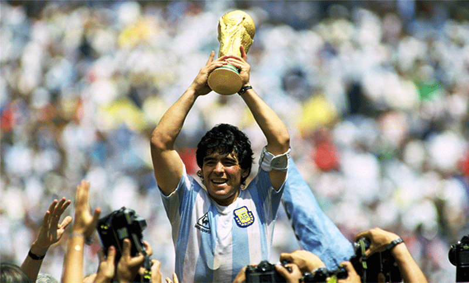

México 86
El Mundial de México 1986 quedó en la memoria por muchas razones: fue el primero, y hasta la fecha el último, que la Selección Argentina ganó fuera de casa; el que marcó la eliminación histórica a Inglaterra, el que catapultó a Diego Armando Maradona como el mejor del mundo, el del mejor gol del siglo, y donde se pudo superar en la final a Alemania, una potencia que luego se transformó en imbatible para la Albiceleste. El 29 de junio de 1986, en el Azteca de Mexico, la Selección de Carlos Salvador Bilardo hacía historia. Ese día fue el final de un camino que había comenzado con dudas. Muchas críticas, en algunos casos con razón, acompañaron esa etapa del Narigón con la Selección. Pero el Mundial fue otra historia.
Allí comenzó a gestarse un equipo ganador, invencible, que contó con la presencia de un jugador que marcó la diferencia por sobre el resto, y que fue Diego Armando Maradona. Argentina formó parte del Grupo A, donde además estaban el campeón Italia, Bulgaria y Corea del Sur. El equipo de Bilardo arrancó con un triunfo por 3 a 1 ante Corea, la selección más débil de la zona. Ganó ese partido sin problemas, con dos goles de Jorge Valdano y otro de Oscar Ruggeri, mientras que el descuento coreano vino de parte de Park, a 17 minutos del final.
En el segundo turno llegó una dura prueba: Italia. Un partido para saber dónde estaba parada realmente la Selección. El equipo no defraudó. La Azzurra arrancó ganando 1 a 0 con un penal discutido que Altobelli convirtió en gol a los seis minutos de juego. Pero el equipo de Bilardo iba a recuperarse. Un gran gol de Maradona, quien desde una posición muy esquinada y con marca encima sacó un remate imposible que entró por el segundo palo de Galli, puso el 1 a 1 final.
En la última jornada del grupo, Bulgaria no opuso demasiada resistencia: el triunfo por 2 a 0, con goles de Valdano y Burruchaga, dejaron en claro que el equipo iba por buen camino. Las dudas de la difícil eliminatoria y de los amistosos previos al Mundial parecían quedar de lado. El equipo terminó primero en la zona. Pero el Mundial estaba comenzando.